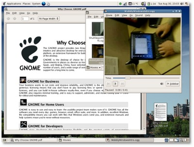
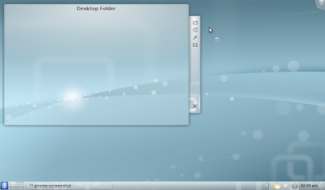
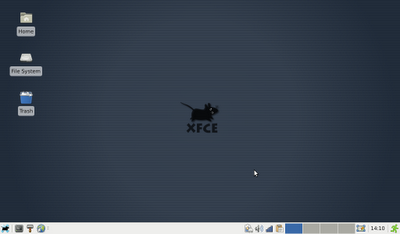
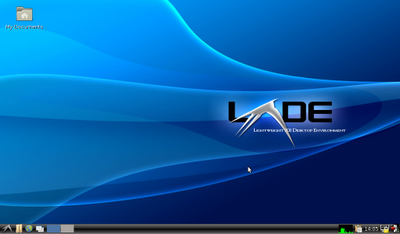
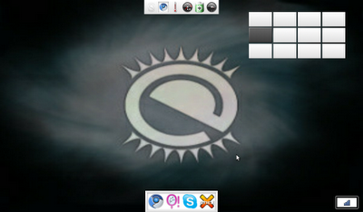

Overview: Common Linux desktops
Something most new Linux users often struggle to understand is the concept of desktop environments. What a desktop environment actually is, I feel, gets further clouded when users start exploring different "spins" of a distro (short for distribution). For example, it is very common for a new user to think that Kubuntu or Xubuntu is something entirely different from the well known Ubuntu. Many do not know that they can easily install any *buntu on any other *buntu with a single command![1]
Just as choosing the distro can be difficult, so can choosing the "right" desktop environment. The following is an overview of some of the best known desktop environments so you can be more informed in your decision.
Gnome: The most popular desktop environment currently in use is Gnome - it is the desktop environment that powers the three most popular Linux desktop distros (Ubuntu, Fedora, and Linux Mint). Gnome is a fully developed desktop environment that provides a fully integrated application set. It is easy to use and provides GUI tools for making edits to all the different features that are available within it. It is a very "user friendly" desktop environment that is fantastic for new users.
 Gnome's memory footprint is modest for all the features it provides. A default Gnome install uses around 180megs (Mb) of RAM. If you like eye candy on your computer, odds are you will want to run Compiz (desktop effects) on your Gnome desktop. A default Gnome install with Compiz running uses slightly more memory, right about 205megs.
KDE: In terms of popularity, KDE is the second most popular desktop environment. Like Gnome, it is fully mature and provides its own full application set as well as GUI tools for configuration. KDE also has a wide selection of "plasma widgets", which are handy applets you can place all around your desktop for all sorts of tasks. They range from something as practical as a calculator to ones as useless as a display from "The Matrix".
 Overall, KDE is much more customizable than Gnome, but this comes at a cost - a default KDE install uses around 510megs of RAM. However, if you are looking for eye candy, it does not cost as much to run KWin (KDE's built in desktop effects) as it does to run Compiz: with KWin enabled, a default KDE install uses around 520megs of RAM.
XFCE: XFCE is designed to be simplistic and quick. It does not provide much in the way of eye candy (although you can run Compiz on it), but it is a decently fast/responsive desktop environment. While XFCE does have some of its own applications, such as its file manager Thunar and the XFCE system monitor, it does still borrow some applications from the Gnome environment (such as the nm-applet network manager). Don't think XFCE is an immature project though: what it borrows from Gnome is more to save itself from reinventing the wheel than from a lack of ability. XFCE does not have quite as many tools for making GUI edits as Gnome or KDE, but it does have a fairly good configuration panel.
 Designed to be quick and lightweight, XFCE leaves a low memory footprint on the system you have it running on. In its default state, XFCE uses around 140megs of RAM.
LXDE: LXDE is a newer project in the world of Linux desktop environments. Similar to XFCE, LXDE's goal is to provide a fast, lightweight desktop environment with little resource usage. LXDE has a few of its own applications, but those applications it still lacks it borrows from Gnome and XFCE. The age of the LXDE project really shows when you start to look into making customizations to things. Many adjusts have to still be made by manually editing configuration files - not a bad thing if you know your system well (or are willing to learn it), but this can be a giant setback for a beginner who wants things to "just work".
 LXDE may be a much younger project than XFCE, but it does a fantastic job of resource conservation. A fresh install of LXDE uses 100megs of RAM, the lowest of all the desktop environments I am reviewing today.
E17: I cannot do an overview of Linux desktop environments without mentioning E17. E17 is designed to be a lightweight, but elegant desktop environment. It is very successful at both of these tasks. E17 uses all of its own libraries, that have been built from the ground up for speed and flexibility. E17 is a tinkerers delight, you can customize and change anything and everything.
 A base install of E17 leaves a memory footprint of around 110megs of RAM. Now, while a base install is functional, half the fun of E17 is in playing with widgets, changing transitions, and generally toggling everything you can just to see how shiny you can make your desktop. After I had my E17 fully configured, its memory footprint was increased to a whopping 120megs of RAM.
A few of you may be wondering if E17 is so lightweight, flexible, and flashy, why don't more distros opt to use it for their desktop environment? There are two reasons for this. First and foremost is the fact that E17 is very much "beta" software. Compiling the latest version from source at any given point can have piles of crashes/segfaults that can make using it a giant headache. Second, if you do take the time to piece together a stable E17 build (check out Elive for the best E17 distro around), the desktop environment takes some getting used to. For many, it will feel foreign whether they are used to using another Linux desktop environment or a Windows machine.
Final Thoughts: All of the various desktop environments have their advantages and their disadvantages. Which one is right for you largely depends on your task at hand. Personally I run LXDE on my netbook, KDE on my gaming laptop, and Gnome on my home media center. If you are not sure which is best for you, try them out! It is all free software after all - get a feel for which desktop environment you are most comfortable on and use that one.
Is there another desktop environment that you enjoy using that I failed to mention here? If so, let me know, I am always looking to tinker with new things.
[1]
The commands that allow you to install one version on another are:
sudo apt-get install ubuntu-desktop sudo apt-get install kubuntu-desktop sudo apt-get install xubuntu-desktop sudo apt-get install lubuntu-desktop etc.
You could also simply install the DE with the appropriate meta-package, e.g.:
sudo apt-get install kde sudo apt-get install lxde
| Share |

|
Talkback: Discuss this article with The Answer Gang
![[BIO]](../gx/authors/hoogland.jpg)
I am currently a full time student working my way through a math education program on the south side of Chicago. I work in both theatre & computer fields currently. I am a huge believer in Linux and believe we will see Microsoft's dominant market share on the personal computer crumble at some point in the next twenty years. I write a good deal about technology and you can always find my most current thoughts/reviews/ramblings at http://jeffhoogland.blogspot.com/